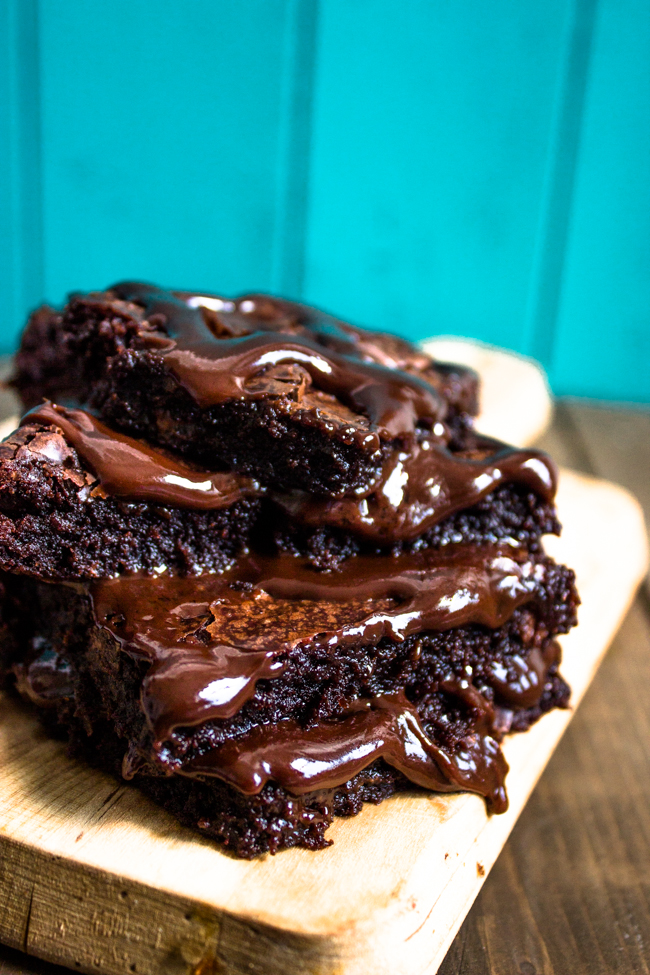

Super Moist & Fudgy Brownies with Chocolate Ganache

I haven't tried to make this yet. Looks so good. Kinda BS that the Ganache recipe isn't included. I'll have to come back and add one later.
Ingredients
- 3/4 cup all-purpose flour
- 3 large eggs
- 3/4 cup semisweet chocolate chips
- 5 ounces semisweet chocolate bar, finely chopped
- 2 Tablespoon cocoa powder
- 1/4 teaspoon salt
- 3/4 cup unsalted butter
- 3/4 cup granulated white sugar
- 1/4 cup light brown sugar
- 1 teaspoon vanilla extract
- BYO Chocolate genache recipe
Steps
- Preheat oven to 350 degrees F. Line an 8x8 or 9x9 inch pan with parchment paper and let it hang over two sides.In a medium bowl, sift together flour, cocoa powder, and salt; set aside.
- In a large saucepan, heat the butter on low and stir until butter has melted. Add chocolate, and stir constantly until mixture is smooth. Remove from heat and stir in both sugars until combined. allow to slightly cool.
- After the chocolate mixture is slightly cooled, Whisk in the eggs and vanilla until fully combined. Add flour mixture to batter and stir just until combined. Stir in chocolate chips.
- Pour batter into prepared pan, smooth top with a greased spatula. Bake for 20-25 minutes (20 minutes for gooey Brownies). Be careful not to over-bake. Let cool completely then pour ganache on top. Cut into pieces and serve or store.
Home